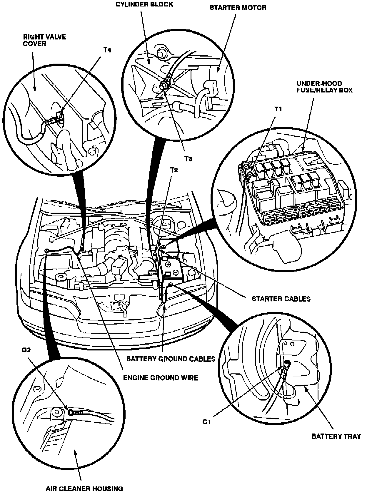

Operation CHARM
: Car repair manuals for everyone.
Home
>>
Acura
>>
1993
>>
Legend Coupe V6-3206cc 3.2L SOHC FI
>>
Repair and Diagnosis
>>
Diagrams
>>
Exploded Views
>>
Wire Harness Routing
>>
Front Compartment Terminal and Ground Points
Front Compartment Terminal and Ground Points
Connector Locations And Connector Wire Harness Routing: Front Compartment Terminal And Ground Points:
